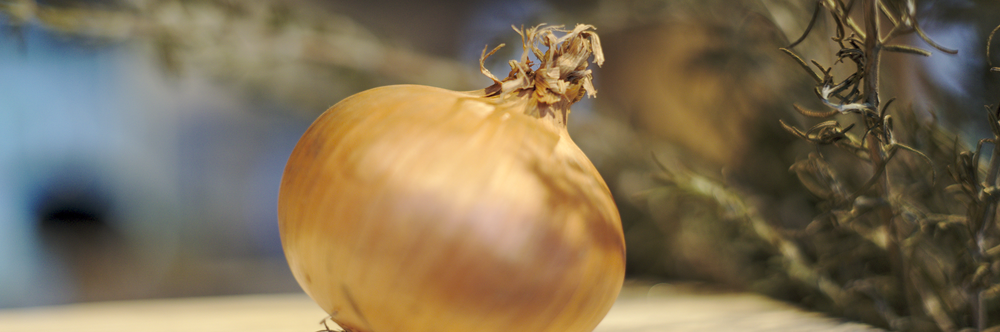
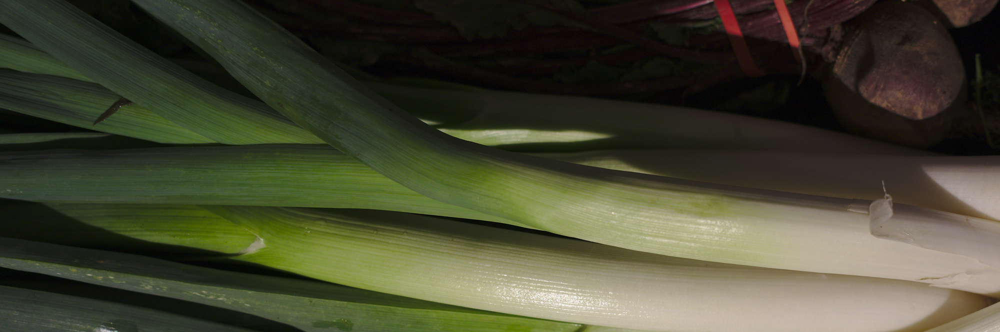

Ons eetgedrag verandert snel en is lastiger te voorspellen. Buzzwords zijn gezondheid, duurzaam, bio, lokaal maar er zijn andere zaken van belang. Gemak in de (bio)supermarkt, thuisbezorgd, foodboxes & niet te lang in de keuken willen staan maar wel lekker en verantwoord willen eten.
En we zijn lekker inconsequent: flexitariër, vegetariër en klimatariër maar we eten af en toe graag een hamburger. We zoeken steeds exotischer superfoods
maar letten ook op de herkomst en houden van lokaal.
Het aantal eenpersoons huishoudens is de laatste 10 jaar met 20% gestegen en zal door de vergrijzing verder stijgen.
Jongeren aan de andere kant van het spectrum, de millenials of boomerang generatie, blijven vaker thuis wonen en hebben relatief veel te besteden. Het benoemen van ‘ de klant ‘ is lastiger geworden.

